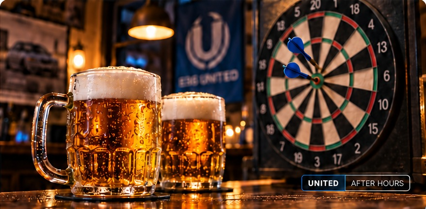

E36 UNITED
KLUBOVÝ VEČER
ŠIPKY. PIVO.
STAY UNITED.
Dáme mámu, pár asfaltů a bude dobře.
ÚTERÝ 27. 10. 2026OD 19:00V KLUBU
Dorazíš?
Jak moc dneska potřebuješ pivo?
0 · V pohodě10 · To byl den

Dáme mámu, pár asfaltů a bude dobře.